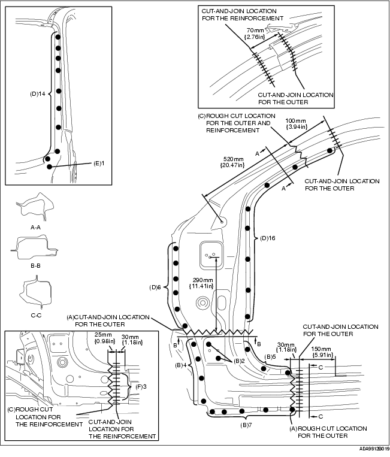

Front pillar removal
1. Rough cut area (A), drill the 18 weld locations indicated by (B), then remove the lower part of the front pillar outer.
2. Rough cut area (C), drill the 38 weld locations indicated by (D), and 1 weld locations indicated by (E), and 3 weld locations indicated by (F), then remove the front pillar outer and reinforcement.
3. Rough cut area (G), drill the 9 weld locations indicated by (H), then remove the front pillar inner.
